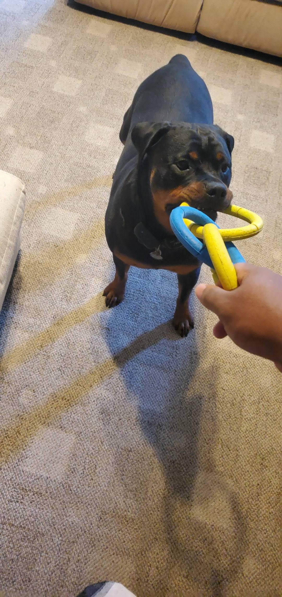
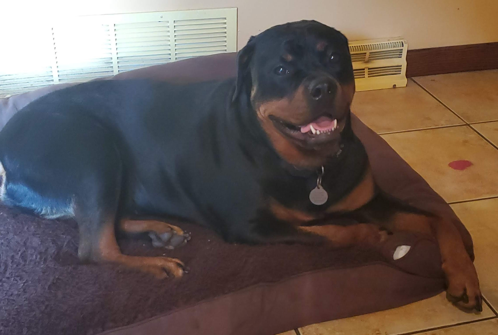
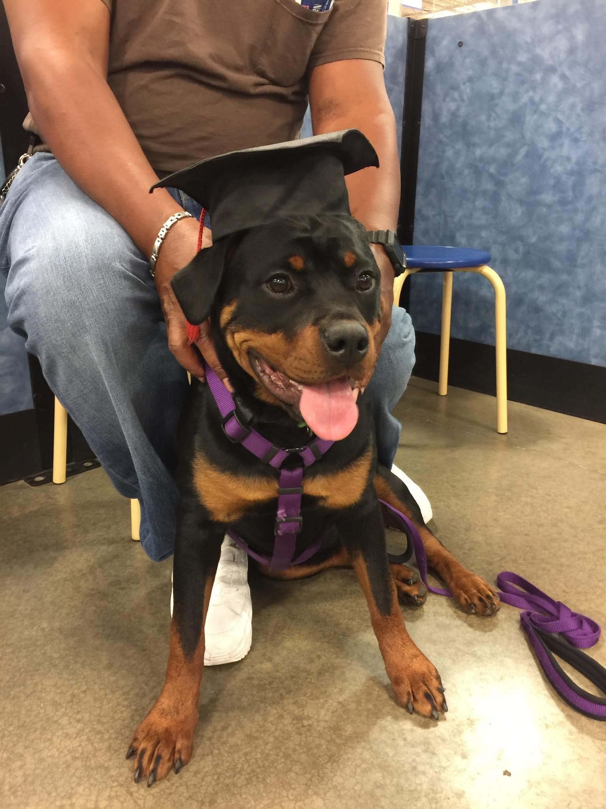
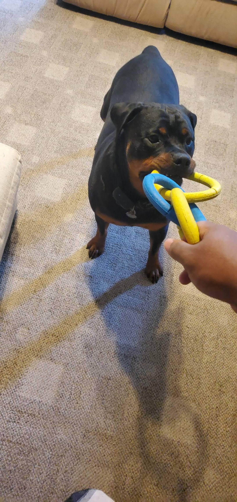
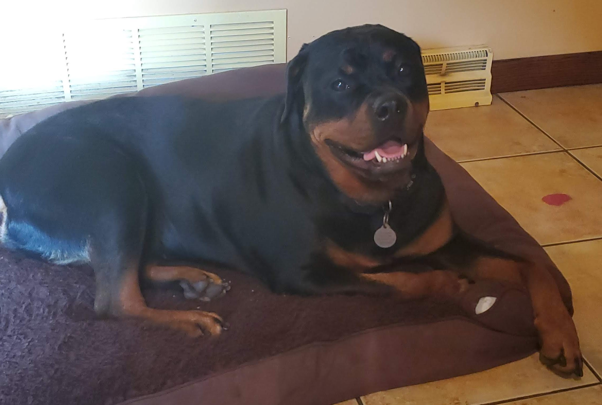
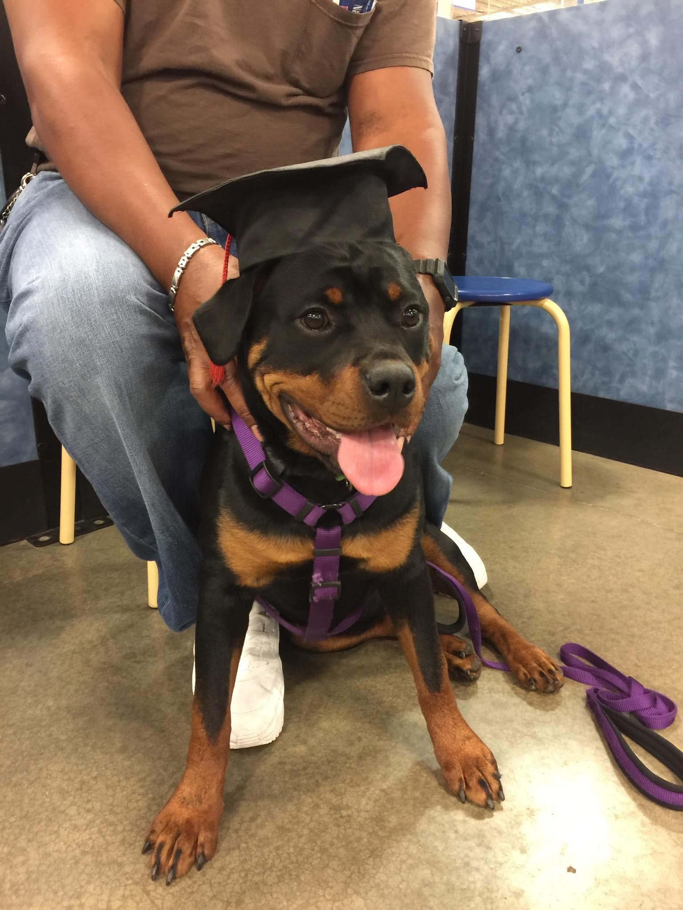

Photos
This section will show you photos of Bailey for your viewing, so please enjoy!
Looking Through the Window

Tug of War
Just Woke Up
Petsmart Graduate
Just a Baby

This page is dedicated to my dog Bailey!
Bailey is a Rottweiler and was born in 2016 and has lived with my family ever since. She's still happy and healthy to this day at the age of 8!
Bailey is a lover of many things so I created a list in no particular order.
This section will show you photos of Bailey for your viewing, so please enjoy!
Looking Through the Window
Tug of War
Just Woke Up
Petsmart Graduate
Just a Baby